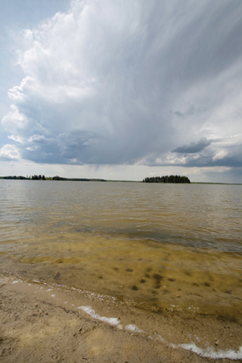

Module 1—Chemical Foundations
Lesson 3 —Molecular Elements and Compounds
 Get Focused
Get Focused

© Matt Davidson/iStockphoto
Picture yourself sitting on a quiet beach in July. It's hot, and the sky above you is a crystalline blue. On the horizon you can see clouds building up, maybe hinting of a thunderstorm later in the evening. A light breeze blows and cools your skin. And then it's still and hot again. You grab your glass of cold water that still contains a few remaining ice cubes. The glass has condensation droplets all over it; so you rub the glass on your forehead to try to cool off. You realize that this drink isn't going to cool you off for very long, so maybe it’s time to go into the water.
Water is perhaps the most important molecule. Without water, there would be no life on Earth. Your body is made up of between 60% and 70% water. Water is a molecule produced by the chemical joining of two hydrogen atoms to a single oxygen atom. Scientists have explained this kind of bond as a sharing of electrons between atoms.
molecule: an entity consisting of a group of non-metal atoms held together by covalent bonds
Sharing electrons may occur between the same (molecular elements, including elements that exist in a pure form in diatomic and polyatomic groups) or different non-metal atoms (molecular compounds). You may recall from your study in Science 10 that many molecular compounds are named using a prefix-naming system, whereas the names of other molecular compounds must be memorized. Molecular elements and compounds can be found in solid, liquid, and gaseous form at standard ambient temperature and pressure (SATP) and do not form conducting solutions. Is there a relationship between the properties of water, and other molecular compounds, and this type of bonding?
Essential Questions
- From Science 10, can you recall the principles for assigning names to molecular substances?
-
How does the difference in electronegativity within a compound affect bonding?
 Module 1: Lesson 3 Assignment
Module 1: Lesson 3 Assignment
You will complete the Lesson 3 Assignment at the end of the lesson.